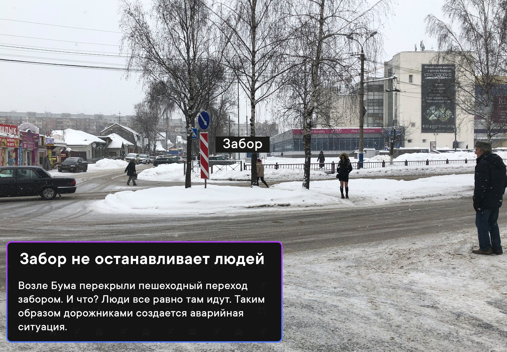
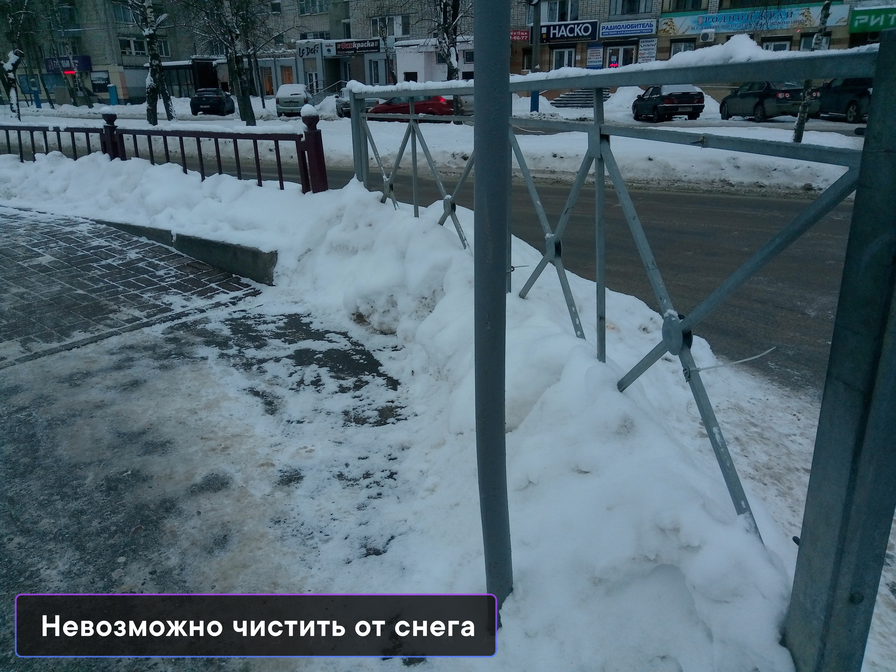
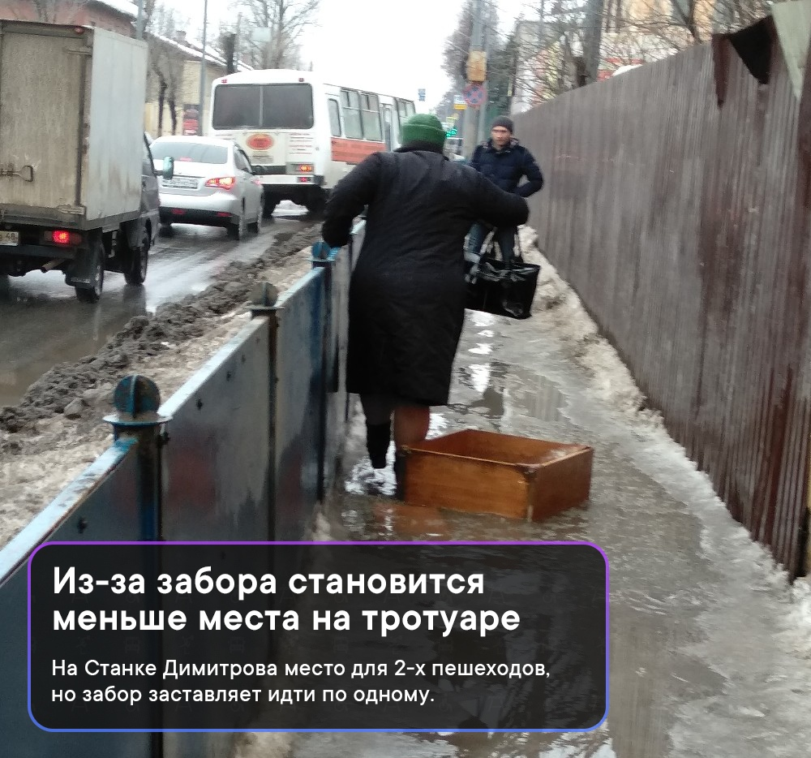
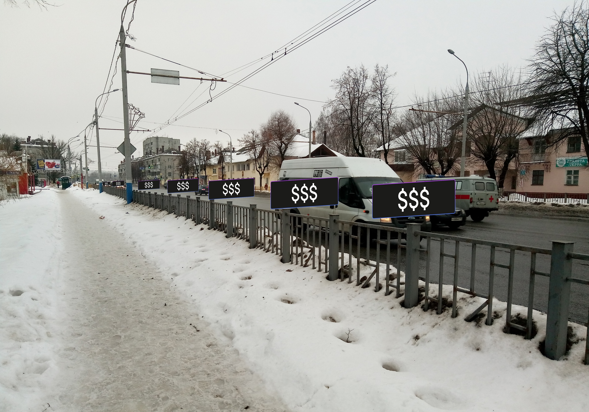

Заборы в городе — ошибка

Почти каждый забор на улице — это признак неправильного проектирования города. Заборами перекрывают “неудобные” для дорожников, но удобные для пешеходов переходы. Заборы сужают тротуар, а в зимнее время из-за них невозможно чистить дорогу от снега. И, наконец, они убивают людей.
Дорожные ограждения опасны.
Заборы не обеспечивают безопасность, а лишь создают ее иллюзию. Забор в силу конструкции точно не остановит автомобиль на скорости, а части самого ограждения создадут дополнительный поражающий эффект для пешеходов. Такой шрапнелью могут быть задеты пешеходы в 10 метрах от аварии.
Забор не останавливает пешеходов.
Если пешеходы постоянно переходили где-то дорогу потому что им это было удобно, то в отсутствие удобной альтернативы они продолжат это делать, перелезая через ограждения или огибая их, как это происходит на улице 22-го съезда.
Типо перекрыли пешеходный переход. Просто поставили забор и создали аварийную ситуацию.
Водители, как правило, притормаживают на пешеходном переходе. Когда на таком участке появляется забор, у водителя появляется иллюзия, что пешеходов в этом месте не будет, поэтому он не сбавит скорость. Понятно, что пешеходы нарушают ПДД, но заборы делают экстремальную ситуацию неожиданной.
Невозможно чистить дорогу от снега.
Заборы сужают тротуары
Твой друг всегда будет идти сзади или спереди. Иначе он будет пачкать рукав о забор.
Бесполезная трата денег
Деньги на ветер
Колоссальные бюджеты тратятся установку и содержание заборов. При этом ограждения бесполезны и опасны.
Успокоение трафика вместо установки заборов
Установка заборов — неправильный метод повышения безопасности на дорогах. Вместо этого надо успокаивать трафик:
1. Уменьшение скорость движения автомобиля до 50км/час затем до 40.
2. Сужение полос.
3. Создание пешеходных переходов там где удобно людям, а не дорожникам.
4. Строительство островков безопасности.
Подробнее о успокоении трафика в Брянске мы опишем в следующих постах.